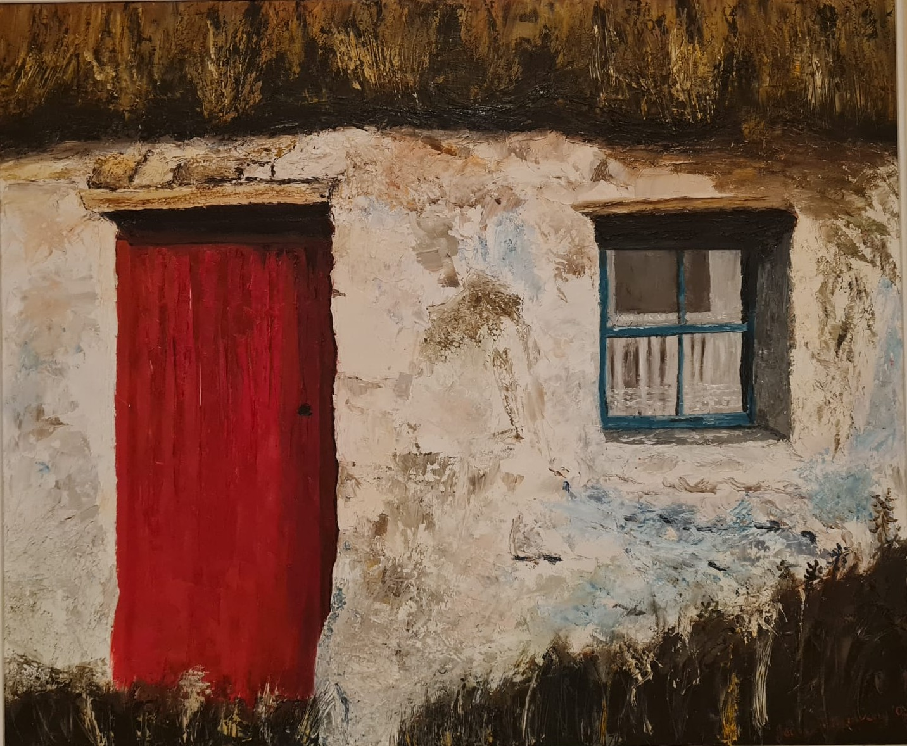

Make targets.mind
This turns the painting photo into the tracking file the AR scene needs. Do it once, on a laptop, then add the downloaded file to the site folder next to index.html and deploy again.

This turns the painting photo into the tracking file the AR scene needs. Do it once, on a laptop, then add the downloaded file to the site folder next to index.html and deploy again.
